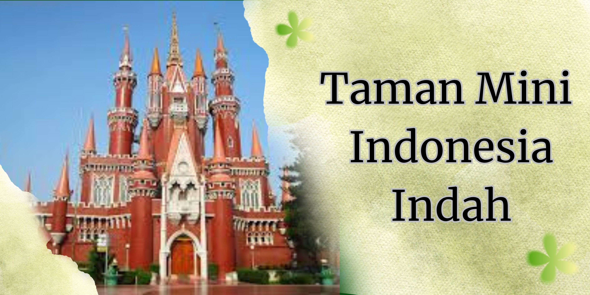
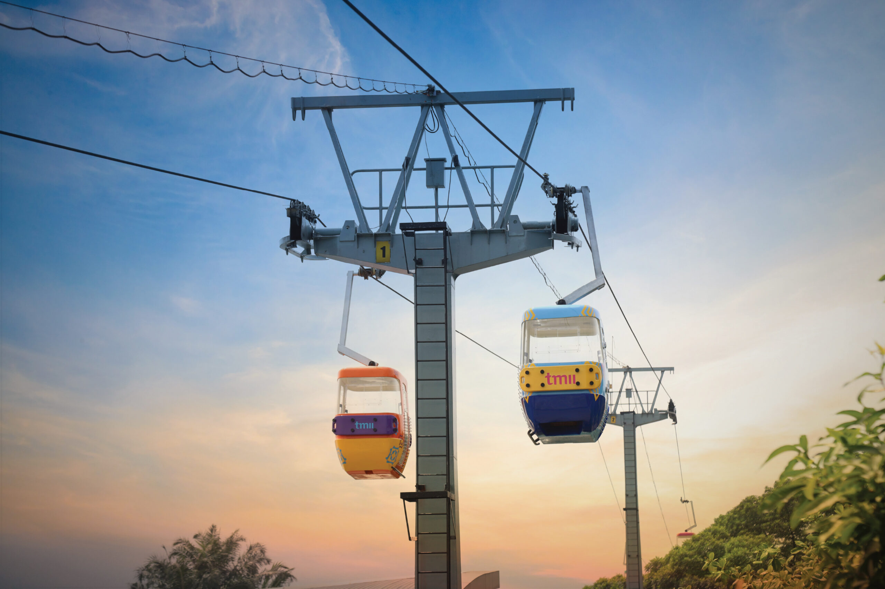
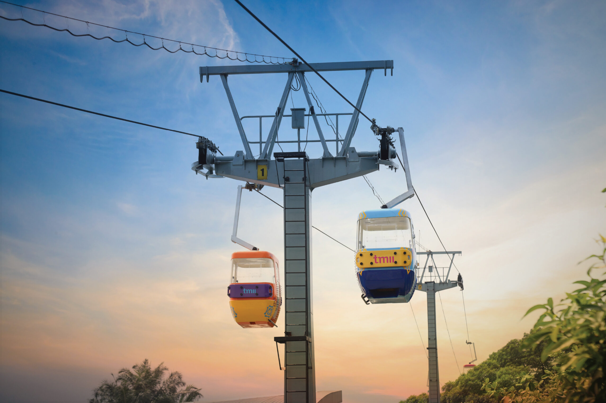
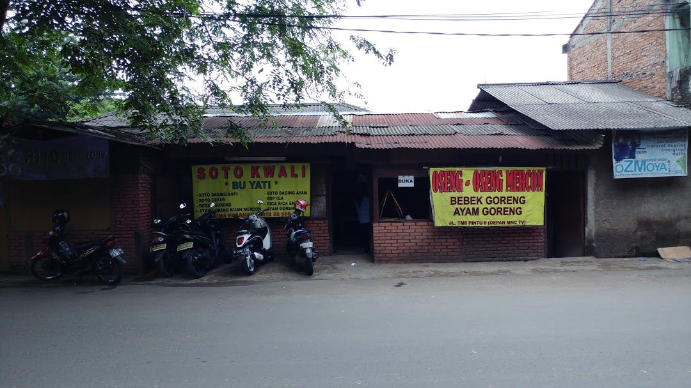
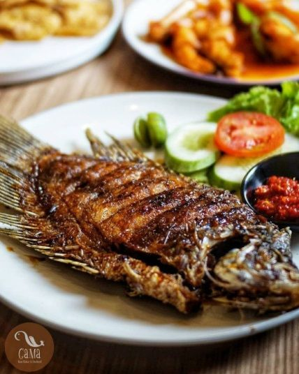
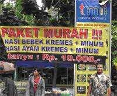
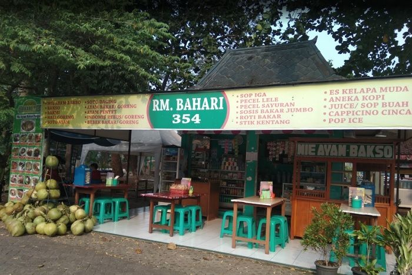

Taman Mini Indonesia Indah
Details
Taman Mini Indonesia Indah adalah kawasan rekreasi berbasis budaya yang terletak di Jakarta Timur, Indonesia. Sejak Juli 2021, taman ini dikelola oleh Injourney Destination Management, anak perusahaan dari perusahaan induk pariwisata milik negara, InJourney. Taman ini merupakan rangkuman kebudayaan bangsa Indonesia, yang mencakup berbagai aspek kehidupan sehari-hari masyarakat 26 provinsi indonesia (pada tahun 1975) yang ditampilkan dalam anjungan daerah berarsitektur tradisional, serta menampilkan aneka busana, tarian, dan tradisi daerah. Di samping anjungan-anjungan daerah, di tengah-tengah TMII terdapat sebuah danau yang menggambarkan miniatur kepulauan Indonesia yang memiliki pertunjukkan air mancur menari dan atraksi drone bernama Tirta Cerita. TMII memiliki sarana rekreasi lainnya seperti kereta gantung, berbagai museum, Teater Keong Emas dan Teater Tanah Airku, menjadikannya sebagai salah satu kawasan wisata terkemuka di Jakarta.
Buka Tutup:
Taman Mini Indonesia Indah
- Thursday 5.00 am–8.00 pm
- Friday 5.00 am–8.00 pm
- Saturday 5.00 am–8.00 pm
- Sunday 5.00 am–8.00 pm
- Monday 5.00 am–8.00 pm
- Tuesday 5.00 am–8.00 pm
- Wednesday 5.00 am–8.00 pm
Bayt Al Quran dan Museum Istiqlal
- Thursday 8.30 am–3.30 pm
- Friday Closed
- Saturday 8.30 am–3.30 pm
- Sunday 8.30 am–3.30 pm
- Monday 8.30 am–3.30 pm
- Tuesday 8.30 am–3.30 pm
- Wednesday 8.30 am–3.30 pm
Museum Perangko Indonesia
- Thursday 8.00 am–4.00 pm
- Friday 8.00 am–4.00 pm
- Saturday 8.00 am–4.00 pm
- Sunday 8.00 am–5.00 pm
- Monday 8.00 am–4.00 pm
- Tuesday 8.00 am–4.00 pm
- Wednesday 8.00 am–4.00 pm
Museum Tionghoa
- Thursday 10.00 am–4.00 pm
- Friday 10.00 am–4.00 pm
- Saturday 10.00 am–4.00 pm
- Sunday 10.00 am–4.00 pm
- Monday Closed
- Tuesday 10.00 am–4.00 pm
- Wednesday 10.00 am–4.00 pm
Taman Legenda Keong Emas TMII
- Thursday 10.00 am–5.00 pm
- Friday 9.00 am–5.00 pm
- Saturday 9.00 am–5.00 pm
- Sunday 9.00 am–5.00 pm
- Monday 10.00 am–5.00 pm
- Tuesday 10.00 am–5.00 pm
- Wednesday 10.00 am–5.00 pm
Gallery


 

Map
Culinaries
Pondok Pecel Madiun
Soto Kwali Bu Yati
Gama Ikan Bakar & Seafood
Ayam Kremes Cak Wandin
Rumah Makan Bahari 354
Hosted Events
Couple Date Museum (11-22 Februari 2026): Program spesial di Museum Listrik & Energi Baru (MLEB) dengan paket Film 5D, science show, dan eksplorasi museum.
The Mystical Kecak Dance (7 Februari 2026 & rutin): Pertunjukan Tari Kecak di Amfiteater Panggung Budaya.
Tirta Menari (Air Mancur): Pertunjukan air mancur menari dengan musik daerah di Plaza Promenade. Jadwal: Senin-Kamis (13.00 WIB), Jumat (14.00 WIB), Akhir Pekan/Libur Nasional (10.00, 13.00, 16.00 WIB).
Anjungan Daerah & Museum: Jelajah budaya di berbagai anjungan provinsi dan museum (Batik, Pusaka, Indonesia, dll).
Festival Pecinan
Contact
Telpon - 0811-8882-0220, (+62) 81188820220
Email - cs@tamanmini.com
About Us
Ribuan corak adat dan budaya melukis cerita di setiap sudut tanah air dari Sabang hingga Merauke, menghadirkan identitas sebagai citra setiap daerah di Nusantara. Ragamnya menginspirasi mantan Ibu Negara Siti Hartinah, atau yang akrab disapa Ibu Tien Soeharto, untuk menggagaskan pendirian Taman Mini Indonesia Indah atau TMII.
Diawali dari impian seorang Ibu Negara yang ingin membawa rakyatnya menjelajah cerita Indonesia di satu taman terbuka, TMII lahir dan diresmikan pada April 1975 silam sebagai kawasan pelestarian dan pengembangan budaya bangsa. Keragaman 33 provinsi di Indonesia dikemas dalam bentuk miniatur kepulauan Nusantara, anjungan daerah, bangunan dan arsitektur tradisional, kesenian daerah, taman rekreasi, dan berbagai macam wahana. Lahan seluas 150 hektar disulap menjadi panggung seni, rekreasi, dan sarana edukasi bagi pengunjung dari berbagai rentang usia.
Sekian dekade berlalu hingga akhirnya pada 1 September 2023, TMII mempersembahkan wajah baru TMII yang inovatif dan revolusioner. #WajahBaruTMII mengusung empat pilar, yaitu green (hijau), inclusive (inklusif), culture (budaya), dan smart (pintar). Pilar green pada TMII menghadirkan eco-park yang 70 persen areanya adalah taman hijau yang minim emisi. Pilar inclusive mengikutsertakan semua lapisan masyarakat untuk berbagi dalam persembahan kebudayaan, sedangkan pilar culture menghadirkan destinasi wisata yang merangkum corak budaya dan seni serta menjadikan pengunjung pemeran utama dalam setiap kegiatan di TMII. Terakhir, pilar smart melengkapi wajah baru TMII melalui implementasi platform digital yang mudah dan praktis untuk eksplorasi TMII.
Mari jelajah cerita Indonesia yang seru ga ada habisnya di TMII.